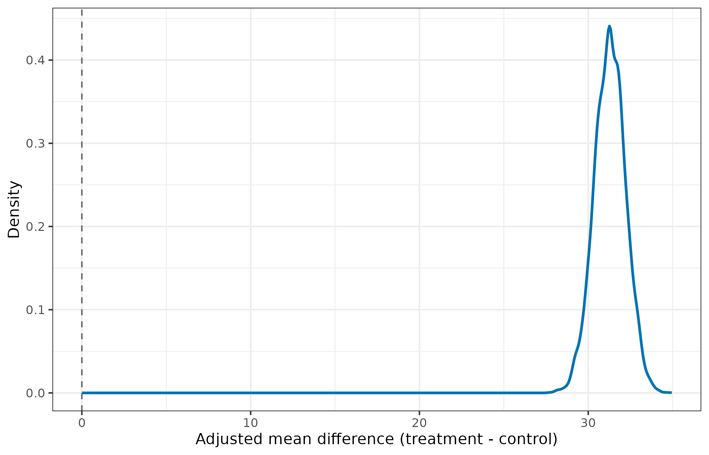

Linear regression with bayesDP
Donnie Musgrove
Graeme L. Hickey
2026-11-20
Source:vignettes/bdplm-vignette.Rmd
bdplm-vignette.RmdPurpose and inputs
bdplm() estimates an adjusted treatment-minus-control
mean difference for a continuous normal outcome. It requires
individual-level current and historical data, with both treatment and
control represented in each study. The binary column must be named
treatment, coded 1 for treatment and 0 for control; the
formula must include an intercept. Covariates must have compatible
definitions and factor levels across studies.
The example uses method = "fixed" explicitly. The
default is "mc"; the distinction and discount functions are
explained in the borrowing overview. The
model assumes a common treatment effect across covariate values,
additive covariate effects, and independent normal residuals with a
common variance within the current analysis.
Worked example
We simulate 30 current participants per arm and 80 historical participants per arm. The current treatment effect is 31 outcome units, the historical effect is 30, the covariate slope is 3, and the residual SD is 5. These are illustrative values, not a proposed clinical design.
set.seed(42)
treatment <- rep(c(1, 0), each = 30)
treatment0 <- rep(c(1, 0), each = 80)
x <- rnorm(60, mean = 1, sd = 5)
x0 <- rnorm(160, mean = 1, sd = 5)
current <- data.frame(
Y = 10 + 31 * treatment + 3 * x + rnorm(60, sd = 5),
treatment = treatment, x = x
)
historical <- data.frame(
Y = 10 + 30 * treatment0 + 3 * x0 + rnorm(160, sd = 5),
treatment = treatment0, x = x0
)
set.seed(42)
current_only <- bdplm(Y ~ treatment + x, data = current, data0 = historical,
method = "fixed", fix_alpha = TRUE, alpha_max = 0)
set.seed(42)
discounted <- bdplm(Y ~ treatment + x, data = current, data0 = historical,
method = "fixed", fix_alpha = FALSE, alpha_max = 1)
set.seed(42)
full_borrowing <- bdplm(Y ~ treatment + x, data = current, data0 = historical,
method = "fixed", fix_alpha = TRUE, alpha_max = 1)
fits <- list("Current only" = current_only, "Discounted" = discounted,
"Full borrowing" = full_borrowing)
comparison <- do.call(rbind, lapply(fits, function(fit) {
c(alpha_t = median(fit$alpha_discount$treatment),
alpha_c = median(fit$alpha_discount$control),
median = median(fit$posterior$treatment),
lower = unname(quantile(fit$posterior$treatment, 0.025)),
upper = unname(quantile(fit$posterior$treatment, 0.975)))
}))
knitr::kable(comparison, digits = 4,
col.names = c("Treatment weight", "Control weight", "Median effect", "Lower 95% CrI", "Upper 95% CrI"))| Treatment weight | Control weight | Median effect | Lower 95% CrI | Upper 95% CrI | |
|---|---|---|---|---|---|
| Current only | 0.00 | 0.0000 | 31.5355 | 29.0593 | 33.9811 |
| Discounted | 0.07 | 0.9868 | 31.2842 | 29.4226 | 33.0591 |
| Full borrowing | 1.00 | 1.0000 | 30.2917 | 29.0066 | 31.5702 |
Historical data are still supplied in the current-only sensitivity analysis because the interface requires them. Their arm-mean prior precisions are reduced to a numerical floor rather than exactly zero. Full borrowing uses the historical arm-mean priors described below; it is not a pooled regression of all participants.
The estimated weights are 0.07 for treatment and 0.9868 for control. They compare current and historical outcomes within each arm after covariate adjustment. They do not compare the current and historical treatment effects directly.
coefficient_draws <- discounted$posterior[, c("intercept", "treatment", "x")]
coefficient_summary <- t(vapply(coefficient_draws, function(draws) {
c(mean = mean(draws), posterior_sd = sd(draws),
lower = unname(quantile(draws, 0.025)),
upper = unname(quantile(draws, 0.975)))
}, numeric(4)))
knitr::kable(coefficient_summary, digits = 4,
col.names = c("Posterior mean", "Posterior SD", "Lower 95% CrI", "Upper 95% CrI"))| Posterior mean | Posterior SD | Lower 95% CrI | Upper 95% CrI | |
|---|---|---|---|---|
| intercept | 9.8828 | 0.4592 | 8.9870 | 10.7861 |
| treatment | 31.2814 | 0.9241 | 29.4226 | 33.0591 |
| x | 3.0118 | 0.1079 | 2.7996 | 3.2249 |
The adjusted treatment-effect posterior mean is 31.2814 outcome units, and the covariate-slope posterior mean is 3.0118. The reported intercept refers to control participants at the original covariate value zero. The printed regression coefficient estimates use means and posterior SDs; the sensitivity table above deliberately uses medians and credible intervals.
summary() reports residuals for current participants,
calculated from posterior mean coefficients with the covariates and
intercept on the original scale. The following calculation makes that
definition explicit; the summary also reports the coefficients and
historical weights:
X <- model.matrix(~ treatment + x, current)
beta_mean <- colMeans(coefficient_draws)
fitted_mean <- drop(X %*% beta_mean)
residuals_current <- current$Y - fitted_mean
summary(discounted)##
## Call:
## bdplm(formula = Y ~ treatment + x, data = current, data0 = historical,
## alpha_max = 1, fix_alpha = FALSE, method = "fixed")
##
## Residuals:
## Min 1Q Median 3Q Max
## -13.369 -2.99 0.34 4.272 10.099
##
## Coefficients:
## Estimate Std. Error
## (Intercept) 9.8828 0.4592
## treatment 31.2814 0.9241
## x 3.0118 0.1079
##
## Discount function value (alpha):
## treatment control
## 0.07 0.9868
##
## Residual standard error: 4.761The median current-participant residual is 0.34, matching the residual summary. Centering the covariates internally does not change these fitted values after the intercept is transformed back.
ggplot(discounted$posterior, aes(treatment)) +
geom_density(colour = "#0072B2", linewidth = 0.9) +
geom_vline(xintercept = 0, linetype = 2, colour = "#666666") +
theme_bw() +
labs(x = "Adjusted mean difference (treatment - control)", y = "Density")
Posterior adjusted treatment effect, with zero marked as a reference. These data simulate a large positive effect.
Model and historical comparison
For current participants the scientific model is
y_i=\beta_0+\beta_1\mathrm{treatment}_i+ \sum_{j=2}^{m}x_{ji}\beta_j+\varepsilon_i, \qquad \varepsilon_i\sim\mathcal N(0,\sigma^2).
The implementation centers each covariate on its pooled current-plus-historical mean and fits separate arm means. With z_{ji}=x_{ji}-\bar x_j,
y_i=\beta_C^*\mathrm{control}_i+\beta_T^*\mathrm{treatment}_i+ \sum_{j=2}^{m}z_{ji}\beta_j+\varepsilon_i.
Here \mathrm{control}_i=1-\mathrm{treatment}_i. The reported treatment effect is \beta_1=\beta_T^*-\beta_C^*, and the original-scale intercept is \beta_0=\beta_C^*-\sum_j\beta_j\bar x_j. Location shifts of covariates leave the treatment effect and slopes unchanged; the intercept changes with the covariate origin. Centering reduces extrapolation when defining historical arm means, but does not generally make all coefficient estimates independent.
Separately within each arm, the comparison model is
y_i=\tilde\beta_0+\tilde\beta_1\mathrm{historical}_i+ \sum_{j=2}^{m}z_{ji}\tilde\beta_j+\varepsilon_i.
Thus \tilde\beta_1 measures a historical-versus-current difference within that arm, not a treatment effect. The comparison uses the baseline prior proportional to 1/\sigma^2 with flat coefficient priors. The fixed method estimates q=\Pr(\tilde\beta_1>0\mid\text{data}), transforms it to p=2\min(q,1-q), and applies the discount function separately to each arm.
For method = "mc", draw s uses
Z_s=\frac{|\tilde\beta_1^{(s)}|}{\sqrt{\sigma_{\tilde\beta_1,s}^2}}, \qquad p_s=2\{1-\Phi(Z_s)\}.
The variance is the conditional variance of the historical-indicator coefficient given that draw’s residual variance. \Phi is the standard normal CDF.
Historical priors and posterior calculation
Unless supplied explicitly, the prior arm means and SDs are estimated by a regression of historical outcomes on separate arm indicators and the centered covariates. The SDs are standard errors of those adjusted historical arm means, not residual SDs. The fitted arm means define independent normal priors: the historical regression’s off-diagonal covariance is not carried into the current model.
For clarity, order the current coefficient vector as
\boldsymbol\beta^*=(\beta_C^*,\beta_T^*,\beta_2,\ldots,\beta_m)^T, \qquad d=m+1.
Let \boldsymbol\mu contain the corresponding prior means, and let \tau_C,\tau_T,\tau_2,\ldots,\tau_m be the supplied or estimated prior SDs. Define prior precision
P=\operatorname{diag}\left( \frac{\alpha_C+\epsilon}{\tau_C^2}, \frac{\alpha_T+\epsilon}{\tau_T^2}, \frac{\kappa}{\tau_2^2},\ldots,\frac{\kappa}{\tau_m^2}\right), \qquad\epsilon=10^{-12}.
The implementation sets \kappa=10^{-12} for "fixed" and
\kappa=0 for "mc".
Consequently, prior_covariate_sd is not the effective prior
SD: the fixed method multiplies it by 10^6, while the Monte Carlo method gives
covariates zero prior precision. With the default nominal SD of 10^4, the fixed method’s effective SD is
10^{10}. These arguments should not be
used as if they specified ordinary informative covariate priors.
prior_covariate_effect likewise has no effect under zero
precision.
For a fixed weight, independent normal coefficient priors and p(\sigma^2)\propto1/\sigma^2 give
\begin{aligned} V(\sigma^2)&=(X^TX/\sigma^2+P)^{-1},\\ b(\sigma^2)&=V(\sigma^2)(X^Ty/\sigma^2+P\boldsymbol\mu),\\ \boldsymbol\beta^*\mid\sigma^2,y,\boldsymbol\alpha &\sim\mathcal N\{b(\sigma^2),V(\sigma^2)\}. \end{aligned}
This is a conditional posterior mean and covariance, not a marginal normal posterior. Equivalently, normal priors can be represented as extra observations with y_*=(y^T,\boldsymbol\mu^T)^T and X_*=(X^T,I_d)^T (Gelman et al. 2013). There are d=m+1 coefficients, so the identity block has dimension d.
Writing b=b(\sigma^2), define
Q(\sigma^2)=\frac{(y-Xb)^T(y-Xb)}{\sigma^2} +(b-\boldsymbol\mu)^TP(b-\boldsymbol\mu).
For fixed prior precision, the marginal density evaluated on the variance grid is
p(\sigma^2\mid y,\boldsymbol\alpha) \propto(\sigma^2)^{-n/2-1}|V(\sigma^2)|^{1/2} \exp\{-Q(\sigma^2)/2\}.
The implementation samples variance values using these density
weights, then samples coefficients conditionally. This is numerical
integration and sampling, not a search for a maximum likelihood
estimate. Under "mc", candidate variances are paired with
generated weight vectors and resampled before conditional coefficient
simulation; it is not simply the fixed fit with its median weight
substituted.
Assumptions and sensitivity
Check linearity, residual spread, influential observations, and whether common covariate slopes are plausible across current and historical studies. Comparability requires overlap in covariate distributions and consistent coding; centering does not resolve confounding or lack of overlap. The independent arm-mean prior is an approximation to the historical regression information.
Compare no borrowing, estimated borrowing, and full borrowing. To
examine draw-specific weights, repeat the estimated-borrowing fit with
method = "mc" and inspect alpha_discount
alongside the treatment-effect draws. For numerical sensitivity,
increase number_mcmc_alpha,
number_mcmc_sigmagrid, number_mcmc_sigma, and
number_mcmc_beta; the Monte Carlo method requires the grid
size not to exceed the number of weight draws. More simulation improves
numerical precision, not the adequacy of the borrowing assumptions.
The historical-discount construction follows the approach of Haddad et al. (2017), with the regression-specific approximations described here.